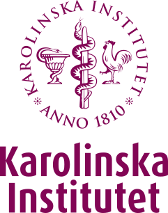
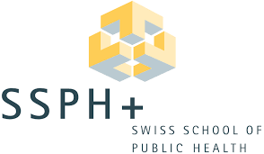
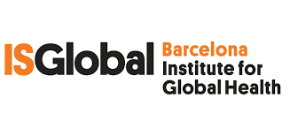

Christianne Jade Gonzales
Registered Pharmacist | Medicines Evidence, Safety & Access | Stockholm
Registered Pharmacist (Philippines) with an MMSc in Health Economics, Policy and Management from Karolinska Institutet, conferred June 2026. Co-author on peer-reviewed publications in the Journal of Medical Economics, with experience spanning pharmacovigilance, health economics, market access, and policy across Asia and Europe.
Currently Open To
Pharmacovigilance and drug safety, clinical research and clinical data, regulatory affairs, medical writing and medical affairs, health economics and market access, and business development, mainly in Sweden and the broader Nordic region.
About
Registered pharmacist (Philippines) with an MMSc in Health Economics, Policy and Management from Karolinska Institutet, where I studied on a Swedish Institute Scholarship for Global Professionals (~3% acceptance rate). My master's thesis is the first independent head-to-head cost-utility analysis of treatment strategies in first-line metastatic castration-resistant prostate cancer from a Swedish healthcare perspective, using patient-level data from a platform trial and conducted in adherence to TLV methodological guidelines.
Before moving to Sweden, I worked as an independent, project-based research consultant (September 2020 – August 2025) across more than ten health systems projects in the Philippines and the Asia Pacific region: national benefit package design, WHO-supported oncology priority-setting, pharmaceutical patient access programme operations, and applied economic evaluation. That followed pharmacy training that included pharmacovigilance case processing and pharmaceutical quality control rotations. I have contributed to two peer-reviewed publications in the Journal of Medical Economics, covering cost-of-illness and cost-effectiveness analysis.
I am currently based in Stockholm and open to conversations: research collaborations, professional opportunities in pharmacovigilance, regulatory affairs, health economics, market access, and policy, or simply an exchange of ideas with people working on similar questions.
Education

MMSc, Health Economics, Policy and Management
Karolinska Institutet, Stockholm, Sweden
Recipient, Swedish Institute Scholarship for Global Professionals (2024–2026)
2024 – 2026
Bachelor of Science in Industrial Pharmacy
University of the Philippines Manila
Pharmacy Exchange Student, Mahasarakham University, Thailand (2019)
2019
Additional Professional Training
Pharmaceutical quality control and manufacturing: production line rotation and QC testing across physical, analytical, and microbiological methods, eL Laboratories
2018
Hospital and community pharmacy practice: prescription management, medication counselling, and clinical ward exposure
2018–2019
Pharmacovigilance: individual case safety report processing, MedDRA coding, and SOP management, Celltrion Global Safety Data Center
2019

Health Economics and Financing, SSPH+ Lugano Summer School, Switzerland
2022

Biomedical Data Science and Machine Learning, ISGlobal Barcelona
2023
Credentials
Licence
Registered Pharmacist
Professional Regulation Commission, Philippines
2021
Certifications
Good Clinical Practice, NIDA Clinical Trials Network. First taken 2022, retaken with course completion 12 August 2026, valid to 12 August 2029 (course version 6, effective April 2026).
Introduction to Pharmacovigilance, Uppsala Monitoring Centre
2020
Signal Detection and Causality Assessment, Uppsala Monitoring Centre
2020
Awards and Grants
Swedish Institute Scholarship for Global Professionals
2024–2026
Swiss Plexus Scholarship
2022
UPM National Institutes of Health Student Researcher Grant
2019
UP College of Pharmacy Service Award
2019
Most Promising Project and Best PowerPoint, 9th Natural Products Analysis Conference
Memberships
Publications
2026
Montilla PJ, Crisostomo AC, Cunanan E, ... Gonzales CJ, ... Villanueva AR. Cost-effectiveness analysis of empagliflozin for chronic kidney disease in the Philippines. Journal of Medical Economics, 29(1). doi:10.1080/13696998.2025.2602361
2025
Villanueva AR, de Leon D, ... Gonzales CJ, ... Montilla PJ. Cost-of-illness analysis of CKD management in the Philippines. J Med Econ. 2025;28(1):494–507. doi:10.1080/13696998.2025.2481766 · 2nd most viewed article in the Journal of Medical Economics in 2025
2024
Editor. FIP. Improving access to safe and quality essential medicines and medical devices: The role of pharmacy. The Hague: FIP, 2024.
Selected Work
Real-World Evidence in ATMP HTA Submissions: A Cross-HTA Landscape Analysis for JCA Readiness
EU HTA Regulation Regulatory Affairs Joint Clinical Assessment Real-World Evidence ATMPs AI-Assisted Methods TLV G-BAThe EU Health Technology Assessment Regulation requires Joint Clinical Assessments (JCA) for new medicines, with ATMPs among the first categories in scope. This independent project examines regulatory submission requirements by mapping ATMP assessment documents from TLV (Sweden) and G-BA (Germany), identifying cross-HTA divergences in real world evidence use and what JCA will require. Combines a structured RWE classification framework with prompt engineering to extract dual layer outputs for auditability, mapped against JCA PICO requirements.
Cost-Utility Analysis of Treatment Strategies in Metastatic Castration-Resistant Prostate Cancer in Sweden
Partitioned Survival Model R / hesim Swedish HTA Oncology TLV FrameworkThe first independent head-to-head cost-utility analysis of treatment strategies in first-line mCRPC from a Swedish healthcare perspective, using patient-level data from a randomised platform trial.
Economic Burden and Cost-Effectiveness of CKD Management in the Philippines
Cost-of-Illness Cost-Effectiveness Peer-Reviewed Insurance CoverageTwo peer-reviewed studies examining the economic dimensions of chronic kidney disease in the Philippine health system, including a cost-effectiveness analysis of empagliflozin adapted to the PhilHealth reimbursement context.
Cost-effectiveness analysis of empagliflozin for CKD →Cost-of-illness analysis of CKD management →
Benefit Package Design for Acute Cardiac Care: Costing Analysis for PhilHealth STEMI Coverage
Benefit Package Design Claims Data Unit Costing National InsuranceConstructing cost evidence to support the design of a bundled, episode-based reimbursement package for ST-elevation myocardial infarction within the Philippine national insurance system.
View project details →Expanding Insurance Coverage for Childhood Cancers: Evidence Synthesis for WHO-WPRO Priority-Setting
Evidence Synthesis Priority-Setting Paediatric Oncology UHCSupporting the WHO Western Pacific Regional Office in expanding national insurance coverage for childhood cancers through clinical evidence synthesis and stakeholder validation.
Patient Access Programme Design for Oncology Therapies: Pricing and Operational Considerations in APAC
Market Access Patient Access Pricing Design OncologyClient-facing delivery and pricing structure design: contributed to the design and operational launch of two oncology patient access programmes across approximately 50 hospitals and 500 patients in the Philippines.
Related post: AstraZeneca Patient Access Programme launch in the Philippines →Student & Organisation Work
Student Ambassador for the Nordic Countries, UN Development Programme, UN City Copenhagen (April–September 2025).
Student Representative, GlobeLife, an international student network focused on global health and life sciences. View profile →
Professional Associate, Federation of Asian Pharmaceutical Associations (FAPA), listed on the FAPA team directory. View profile →